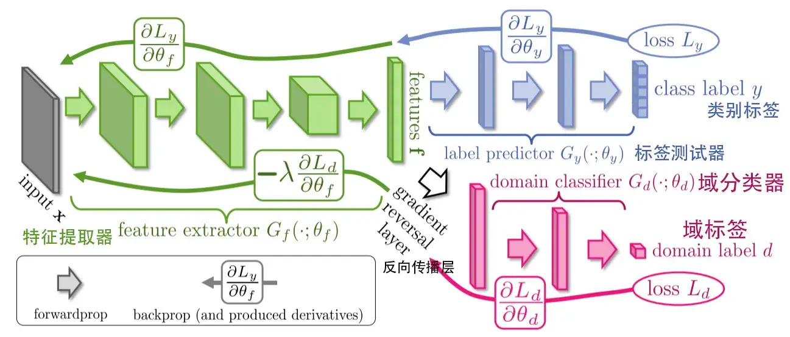
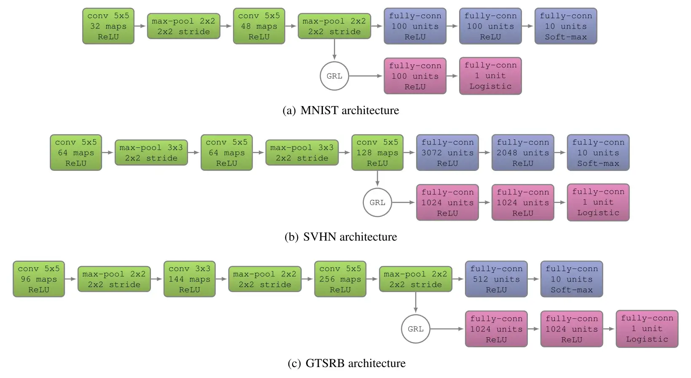
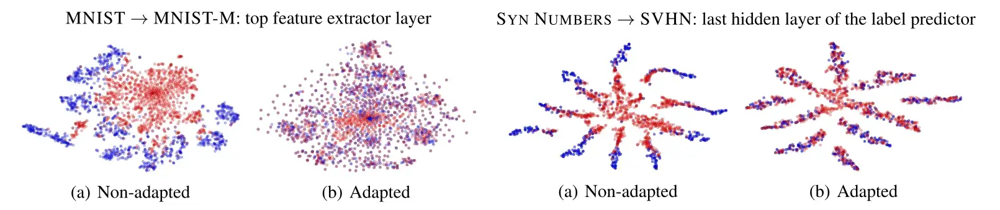
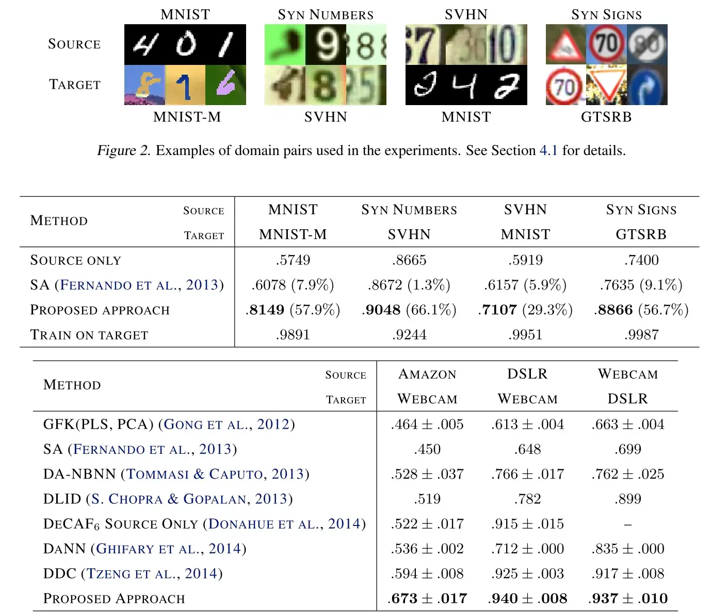

资源
全文
Abstract
性能最好的深度架构是在大量标记数据上训练的。在缺乏针对特定任务的标记数据的情况下，域自适应通常提供了一个有吸引力的选项，因为具有相似性质但来自不同域的标记数据（例如合成图像）是可用的。在这里，我们提出了一种在深度架构中进行域自适应的新方法，该方法可以在来自源域的大量标记数据和来自目标域的大量未标记数据（不需要标记的目标域数据）上进行训练。
随着训练的进行，该方法促进了“深度”特征的出现，这些特征（i）对于源域上的主要学习任务是有区别的，并且（ii）对于域之间的移位是不变的。我们表明，这种适应行为可以在几乎任何前馈模型中实现，通过增加几个标准层和一个简单的新的梯度反转层。所得到的增强架构可以使用标准的反向传播来训练。
总的来说，使用任何深度学习包都可以轻松实现该方法。该方法在一系列图像分类实验中表现良好，在存在大的域偏移的情况下实现了自适应效果，并且在 Office 数据集上的性能优于以前的最新技术。
1. Introduction
深度前馈架构为各种机器学习任务和应用带来了令人瞩目的进步。然而，目前，只有在有大量标记训练数据可用时，这些性能飞跃才会出现。同时，对于缺乏标记数据的问题，可能仍有可能获得足够大的训练集来训练大规模深度模型，但这些数据分布会受到“测试时”遇到的实际数据的影响。一个特别重要的例子是合成或半合成训练数据，这些数据可能大量存在并被完全标记，但其分布不可避免地与真实数据不同。
在训练和测试分布之间存在偏移的情况下学习判别分类器或其他预测器被称为域自适应（DA）。在浅层学习的背景下，已经提出了许多域自适应的方法，例如，在给定和固定数据表示/特征的情况下。所提出的方法，然后建立源（训练时间）和目标（测试时间）域之间的映射，使分类器学习的源域也可以应用到目标域，当与域之间的学习映射组成。域自适应方法的吸引力在于能够在目标域数据完全未标记（无监督域注释）或具有少量标记样本（半监督域自适应）的情况下学习域之间的映射。下面，我们关注更难的无监督情况，尽管所提出的方法可以相当直接地推广到半监督情况。
与之前大多数使用固定特征表示的领域自适应论文不同，我们专注于将领域自适应和深度特征学习结合在一个训练过程中（深度领域自适应）。我们的目标是将域自适应嵌入到学习表示的过程中，以便最终的分类决策是基于对域的变化具有区分性和不变性的特征，即在源域和目标域中具有相同或非常相似的分布。通过这种方式，所获得的前馈网络可以适用于目标域，而不受两个域之间的移位的阻碍。
因此，我们专注于学习结合了 (i) 判别性和 (ii) 领域不变性的特征。这是通过联合优化底层特征以及两个对这些特征进行操作的判别分类器来实现的：
(i) 标签预测器 label predictor，用于预测类标签，在训练和测试时使用；
(ii) 域分类器 domain classifier，用于在训练期间区分源域和目标域。虽然分类器的参数经过优化以最小化它们在训练集上的错误，但底层深度特征映射的参数经过优化以最小化标签分类器的损失并最大化域分类器的损失。后者鼓励在优化过程中出现领域不变特征。
至关重要的是，我们证明了所有三个训练过程都可以嵌入到一个使用标准层和损失函数的适当组成的深度前馈网络中，并且可以使用基于随机梯度下降或其修改的标准反向传播算法（例如具有动量的 SGD）进行训练。我们的方法是通用的，因为它可以用来添加域适应任何现有的前馈架构，是可训练的反向传播。在实践中，所提出的架构的唯一非标准组件是一个相当平凡的梯度反转层，它在前向传播期间保持输入不变，并在反向传播期间通过将其乘以负标量来反转梯度。
2. Related work
近年来，已经提出了大量的域自适应方法，在这里，我们专注于最相关的。多种方法通过匹配源域和目标域中的特征分布来执行无监督域自适应。一些方法通过从源域中重新加权或选择样本来执行这一点，而其他人寻求将源分布映射到目标分布的显式特征空间变换。分布匹配方法的一个重要方面是测量分布之间的（不）相似性的方式。这里，一个流行的选择是匹配核再生希尔伯特空间中的分布均值，而映射与每个分布相关联的主轴。我们的方法还试图匹配特征空间分布，但是这是通过修改特征表示本身而不是通过重新加权或几何变换来实现的。此外，我们的方法使用（隐式）一种相当不同的方法来测量分布之间的差异，该方法基于深度区分训练的分类器的可分性。
……
3. Deep Domain Adaptation
3.1. The model
我们现在详细介绍所提出的域自适应模型。我们假设该模型适用于输入样本 ，其中 是某个输入空间，某些标签（输出） 来自标签空间 。下面，我们假设分类问题中 是一个有限集（），但我们的方法是通用的，可以处理其他深度前馈模型可以处理的任何输出标签空间。我们进一步假设在 上存在两个分布 和 ，它们将被称为源分布和目标分布（或源域 source distribution和目标域 target distribution）。这两个分布都被认为是复杂且未知的，而且相似但不同（换句话说， 通过一些域偏移从 “偏移”）。
我们的最终目标是能够根据目标分布的输入 预测标签 。在训练时，我们可以根据边缘分布 和 分布访问来自源域和目标域的大量训练样本 。我们用 表示第 个示例的二进制变量（域标签），它表示 是来自源分布（如果 ，则 还是来自目标分布（如果 ，则 。对于来自源域（）的示例，相应的标签 在训练时是已知的。对于来自目标域的示例，我们在训练时不知道标签，我们希望在测试时预测这些标签。

我们现在定义一个深度前馈架构，对于每个输入 ，预测其标签 和其域标签 。我们将这种映射分解为三个部分。
- 我们假设输入 首先通过映射 （特征提取器）映射到 D 维特征向量 。特征映射也可能包括多个前馈层，我们将此映射中所有层的参数向量表示为 ，即 。
- 然后，特征向量 通过映射 （标签预测器）映射到标签 ，我们用 表示此映射的参数。
- 最后，相同的特征向量 通过具有参数 的映射 （域分类器）映射到域标签 。
在学习阶段，我们的目标是最小化训练集注释部分（即源部分）上的标签预测损失，因此特征提取器和标签预测器的参数都经过优化，以最小化源域样本的经验损失。**这确保了特征 的判别性以及特征提取器和标签预测器组合在源域上的整体良好预测性能。**同时，**我们希望使特征 具有域不变性。**也就是说，我们希望使分布 和 相似。在协变量转移假设下，这将使目标域上的标签预测准确度与源域上的相同。然而，测量分布 和 的差异并非易事，因为 是高维的，并且分布本身随着学习的进展而不断变化。估计差异的一种方法是查看域分类器 的损失，前提是域分类器的参数 已经过训练，可以以最佳方式区分这两个特征分布。这一观察导致了我们的想法。在训练时，为了获得领域不变的特征，我们寻求使领域分类器损失最大化的特征映射参数 （通过使两个特征分布尽可能相似），同时寻求使领域分类器损失最小化的领域分类器参数 。此外，我们寻求最小化标签预测器的损失。
更正式地说，我们考虑的是功能性：
这里，L_y(·，·) 是标签预测的损失（例如多项式），L_d(·，·) 是领域分类（例如 Logistic）的损失，而 和 表示在第 个训练实例中评估的对应损失函数。基于我们的想法，我们正在寻找提供泛函的鞍点的参数 ，, ：
在鞍点：
- 域分类器 的参数 最小化域分类损失。
- 标签预测器的参数 最小化标签预测损失。
- 特征映射参数 最小化标签预测损失（即特征是区别性的），同时最大化域分类损失（即特征是域不变的）。
- 参数 控制在学习过程中塑造特征的两个目标之间的权衡。
下面，我们证明了标准随机梯度求解器 (SGD) 可以适用于鞍点的搜索。
3.2. Optimization with backpropagation
可以找到鞍点作为下列随机更新的固定点：
其中， 是学习速率（可随时间变化）。更新上式非常类似于用于前馈深度模型的随机梯度下降（SGD）更新，该深度模型包括馈送到标签预测器和域分类器的特征提取器。差别是 中的 −\lambda 因子（差别很重要，因为如果没有这种因子，随机梯度下降将试图使跨域的特征不相似，以最小化域分类损失）。尽管将上式直接实现为 SGD 是不可能的，但将更新上式减少到某种形式的 SGD 是非常可取的，因为 SGD（及其变体）是大多数用于深度学习的包中实现的主要学习算法。
幸运的是，这种减少可以通过引入如下定义的**特殊梯度反转层（GRL）**来实现。渐变反转层没有与其关联的参数（元参数 除外，该参数不会通过反向传播进行更新)。在前向传播过程中，GRL 起到了单位变换的作用。在反向传播过程中，GRL 从后续级别获取渐变，将其乘以 −\lambda，并将其传递给前一层。使用现有的面向对象的包进行深度学习来实现这样的层很简单，因为定义 Forwardprop（身份转换）、Backprop（乘以常量）和参数更新（Nothing）的过程都很简单。如上定义的 GRL 被插入在特征提取器和域分类器之间，从而产生体系结构。当反向传播过程通过 GRL 时，GRL 下游的损耗的偏导数（即 ）w.r.t。将 GRL 上游的层参数（即 ）乘以 −\lambda，即 被有效地替换为 。**因此，在生成的模型中运行 SGD 会实现更新上式，并收敛到鞍点。**在数学上，我们可以正式地将梯度反转层视为由描述其正向和反向传播行为的两个（不相容的）方程定义的“伪函数”：
其中 是一个单位矩阵。然后，我们可以定义 (\theta_f，\theta_y，\theta_d) 的目标“伪函数”，该目标“伪函数”在我们的方法中通过随机梯度下降进行优化：
然后，运行更新执行 SGD，并导致同时出现域不变和区分的特性。在学习之后，可以使用标签预测器 来预测来自目标域（以及来自源域）的样本的标签。
3.3.与 -距离的关系
在这一部分中，我们将简要分析我们的方法在非保守域适应理论中广泛使用的 距离。从形式上讲，
定义了 和 两个分布之间的差异距离。假设集合 。使用该概念，可以从给定其在源域上的性能 的情况下，从在目标域上评估的 获得某一分类器 的性能 的概率界：
其中 和 分别是源分布和目标分布，并且 不依赖于特定的 。考虑由特征抽取器 和一族标签预测器 产生的表示空间上的固定 和 。我们假设域分类器 的家族足够丰富，以包含 的对称差假设集：
这并不是一个不切实际的假设，因为我们有自由选择任何我们想要的 。例如，我们可以将域鉴别器的体系结构设置为标签预测器的两个副本的逐层串联，然后是旨在学习异或函数的两层非线性感知器。在假设成立的情况下，可以很容易地表明训练 与 的估计密切相关。因此，
其中 被最优 最大化。因此，最优判别器给出了 的上界。同时，反向梯度的反向传播改变了表象空间，使 变小，有效地降低了 ，使 更接近 。
4. Experiments
我们在一些流行的图像数据集及其修改上对所提出的方法进行了广泛的评估。其中包括深度学习方法中流行的小图像的大规模数据集，以及 Office 数据集，这是计算机视觉领域适应的事实上标准，但图像要少得多。
基线。对于大部分实验，评估了以下基线。在不考虑目标域数据（网络中不包括域分类器分支）的情况下训练仅源模型。Train-OnTarget 模型在目标域上进行训练，并显示类别标签。该模型作为 DA 方法的上限，假设目标数据丰富，域之间的漂移很大。
此外，我们还将我们的方法与最近提出的基于子空间对齐 (SA) 的无监督 DA 方法进行了比较，该方法易于在新的数据集上设置和测试，但在实验比较中也显示出与其他“浅”DA 方法的良好性能。为了提高该基线的性能，我们从范围\{2，..., 60\}，从而最大化目标域上的测试性能。为了在我们的设置中应用 SA，我们训练了一个仅限源的模型，然后将标签预测器中最后一个隐藏层的激活（在最终的线性分类器之前）作为描述符/特征，并学习源域和目标域之间的映射。由于 SA 基线需要在适应特征后训练新的分类器，并且为了将所有比较的设置放在平等的基础上，我们使用标准线性支持向量机为所有四种考虑的方法（包括我们的方法；再训练后目标领域的性能保持大致相同）重新训练标签预测器的最后一层。对于办公室数据集，我们使用先前公布的结果，直接将我们的完整网络(特征提取器和标签预测器)的性能与最近的 DA 方法进行比较。
CNN 架构。一般来说，我们用两个或三个卷积层组成特征提取器，从以前的工作中挑选它们的确切配置。我们在附录 B 中给出了确切的架构。对于域适配器，我们坚持使用三个完全连接的层 ，除了 MNIST，我们使用更简单的 架构来加速实验。 对于损失函数，我们分别将 和 设置为逻辑回归损失和二项式交叉熵。

**CNN 训练程序。**该模型在 128 个大小的批次上进行了训练。采用均值相减法对图像进行预处理。每个批次的一半由来自源域（具有已知标签）的样本填充，其余部分由目标域（具有未知标签）组成。为了在训练过程的早期阶段抑制来自域分类器的噪声信号，而不是固定适应因子 ，我们使用以下时间表逐渐将其从 0 改为 1：
其中 在所有实验中都设置为 10（时间表没有优化/调整）。有关 CNN 训练的更多细节可在附录 C 中找到。

可视化。我们使用 t-SNE 投影来可视化网络不同点的特征分布，同时对域进行颜色编码。我们观察到，在目标域的分类准确度方面，适应成功与此类可视化中的域分布重叠之间存在很强的对应性。
选择元参数。一般来说，好的无监督 DA 方法应该提供以无监督方式设置元参数（例如 、学习率、动量率、我们方法的网络架构）的方法，即不参考目标域中的标记数据。在我们的方法中，可以通过观察源域的测试误差和域分类器误差来评估整个系统的性能（以及改变超参数的影响）。一般来说，我们观察到自适应成功与这些误差之间存在良好的对应关系（当源域测试误差较低而域分类器误差较高时，自适应更成功）。此外，可以通过计算均值之间的差异来选择域适配器所连接的层。
4.1. Results
我们现在讨论实验设置和结果。在每种情况下，我们都在源数据集上进行训练，并在不同的目标域数据集上进行测试，域之间有相当大的变化。结果摘要载于下表。

MNIST → MNIST-M。我们的第一个实验处理 MNIST 数据集。为了获得目标域 (MNIST-M)，我们将原始集合中的数字与从 BSDS500 的彩色照片中随机提取的块混合。对于两个图像 、，此操作正式定义为 I^{out}_{ijk} = |I^1_{ijk} − I^2_{ijk}|，其中 、 是像素的坐标， 是通道索引。换句话说，输出样本是通过从照片中取出一个块并将其像素反转到与数字像素相对应的位置来生成的。对于人类来说，与原始数据集相比，分类任务只会变得稍微困难一点（数字仍然清晰可辨），而对于在 MNIST 上训练的 CNN 来说，这个域非常独特，因为背景和笔画不再是恒定的。因此，仅使用来源的模型表现不佳。我们的方法成功对齐了特征分布，从而获得了成功的适应结果（考虑到适应是无监督的）。同时，子空间对齐（SA）相对于仅源模型的改进相当有限，从而凸显了适应任务的难度。
Synthetic numbers→SVHN。为了解决在合成数据上进行训练并在真实数据上进行测试的常见情况，我们使用街景门牌号数据集 SVHN（Netzer 等人，2011）作为目标域，使用合成数字作为源。后者（SYN NUMBERS）由我们自己从 Windows 字体生成的 500,000 张图像组成，通过改变文本（包括不同的一位、两位和三位数字）、定位、方向、背景和描边颜色以及模糊量。变化程度是手动选择的以模拟 SVHN，但这两个数据集仍然截然不同，最大的区别是 SVHN 图像背景中的结构化杂波。所提出的基于反向传播的技术效果很好，可以弥补仅使用源数据进行训练和使用具有已知目标标签的目标域数据进行训练之间三分之二的差距。相比之下，SA 不会导致分类准确率有任何显著的提高，从而强调适应任务比 MNIST 实验更具挑战性。
MNIST ↔ SVHN。在这个实验中，我们进一步增加了分布之间的差距，并在外观上存在显著差异的 MNIST 和 SVHN 上进行测试。即使没有自适应，在 SVHN 上进行训练也是具有挑战性的——在前 150 个时期内，分类错误率仍然很高。因此，为了避免陷入不良的局部最小值，我们在这里不使用学习率退火。显然，两个方向（MNIST → SVHN 和 SVHN → MNIST）的难度并不相同。由于 SVHN 更加多样化，因此在 SVHN 上训练的模型预计会更加通用，并且在 MNIST 数据集上表现合理。事实确实如此，并且特征分布的外观也支持这一点。当我们将它们输入到仅对 MNIST 进行训练的 CNN 时，我们观察到域之间的分离相当强烈，而对于 SVHN 训练的网络，特征更加混杂。这种差异可能解释了为什么我们的方法在 SVHN → MNIST 场景中通过自适应成功提高了性能，但在相反方向上却没有成功（SA 在这种情况下也无法执行自适应）。从 MNIST 到 SVHN 的无监督自适应为我们的方法提供了一个失败的例子（我们不知道有任何无监督 DA 方法能够执行此类自适应）。
Synthetic Signs → GTSRB。总体而言，此设置与 SYN NUMBERS → SVHN 实验类似，只是由于类别数量明显增多（43 个而不是 10 个），特征分布更加复杂。
对于源域，我们获得了 100,000 张合成图像（我们称之为 SYN SIGNS），模拟各种拍摄条件。我们的方法再次实现了性能的显著提升，再次证明了其适用于合成到真实数据的自适应。
作为一项额外的实验，我们还评估了所提出的半监督域自适应算法，即当额外提供少量标记目标数据时。为此，我们将 GTSRB 分为训练集（1280 个带标签的随机样本）和验证集（数据集的其余部分）。验证部分仅用于评估，不参与自适应。由于标签预测器现在暴露于目标数据，因此训练过程略有变化。图 4 显示了整个训练过程中验证误差的变化。虽然该图清楚地表明我们的方法可以在半监督设置中使用，但对半监督设置的彻底验证留待将来的工作。
Office 数据集。我们最终在 OFFICE 数据集上评估了我们的方法，该数据集包含三个不同的领域：AMAZON、DSLR 和 WEBCAM。与之前讨论的数据集不同，OFFICE 规模相当小，在最大的领域中只有 2817 张带标签的图像，分布在 31 个不同的类别中。可用数据的数量对于成功训练深度模型至关重要，因此我们选择对在 ImageNet 上预训练的 CNN 进行微调（Jia 等人，2014 年），就像在最近的一些 DA 作品中所做的那样（Donahue 等人，2014 年；Tzeng 等人，2014 年；Hoffman 等人，2013 年）。通过使用完全相同的网络架构，用域分类器替换基于域均值的正则化，我们使我们的方法与 (Tzeng et al., 2014) 更具可比性。
根据大多数先前的研究，我们对通常用于评估的 3 个传输任务中的每一个使用 5 个随机分割来评估我们的方法。我们的训练协议接近
(Tzeng et al., 2014; Saenko et al., 2010; Gong et al., 2012) ，因为我们对每个类别使用相同数量的标记源域图像。与这些作品不同，与例如 DLID (S. Chopra & Gopalan, 2013) 类似，我们使用整个未标记的目标域（因为我们的方法的前提是目标域中未标记数据的丰富性）。在这种传导设置下，我们的方法能够大大提高以前报告的无监督适应的最新准确度（表 2），特别是在最具挑战性的 AMAZON →WEBCAM 场景中（域转移最大的两个域）。
5. Discussion
我们提出了一种新的深度前馈架构无监督域自适应方法，该方法允许基于源域中的大量注释数据和目标域中的大量未注释数据进行大规模训练。与许多以前的浅层和深度 DA 技术类似，自适应是通过对齐两个域之间的特征分布来实现的。然而，与以前的方法不同，对齐是通过标准反向传播训练完成的。因此，该方法相当可扩展，可以使用任何深度学习包来实现。为此，我们计划发布梯度反转层的源代码以及使用示例，作为 Caffe 的扩展（Jia 等人，2014 年）。对更大规模任务和半监督设置的进一步评估构成了未来的工作。这种方法是否可以从特征提取器的良好初始化中受益也很有趣。为此，一个自然的选择是使用在两个域（或目标域）上训练的深度自动编码器/反卷积网络。